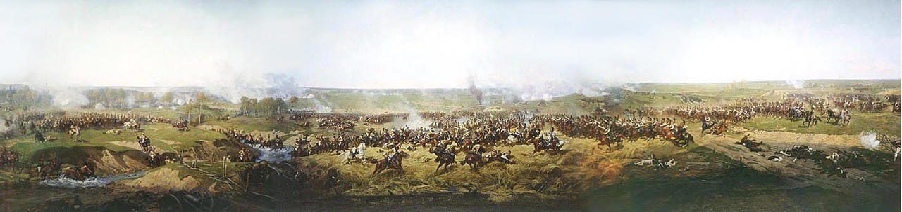
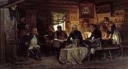
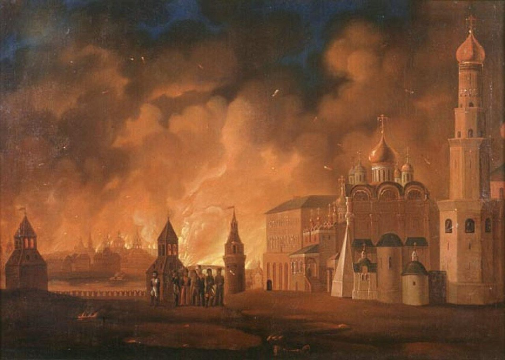

Бой за Шевардинский редут. Бородинское сражение
Накануне Бородинской битвы 24 августа произошёл бой за Шевардинский редут. Целью войск, которыми командовал генерал А. И. Горчаков, была задержка французов, чтобы основные силы русской армии могли занять более выгодные позиции. На левом фланге Кутузов расположил армию под командованием П. И. Багратиона. Здесь были вырыты земляные укрепления, которые вошли в историю под названием «багратионовских флешей». В центре солдаты насыпали высокий земляной курган, где разместили артиллерию и войска под командованием Н. Н. Раевского — знаменитая «батарея Раевского». Армией на правом фланге командовал М. Б. Барклай де Толли. Соотношение сил теперь было равным: от 112 до 155 тыс. войск при 640 орудиях у русских против 138 тыс. солдат и около 600 орудий у французов.
Битва началась около шести часов утра. Наполеон планировал зайти с флангов и окружить русскую армию. Шесть часов ушло у французов на то, чтобы, неся огромные потери, завладеть багратионовскими флешами. Сам Багратион при этом был тяжело ранен и через несколько дней скончался. Но развить этот успех они уже не могли. Тогда вся мощь французской армии обрушилась на батарею Раевского. Чтобы помочь ей, Кутузов отправил в тыл к французам конный корпус Ф. П. Уварова. Штурм батареи был сорван. Впоследствии она несколько раз переходила от русских к французам и только к четырём часам осталась за противником. Но и этой удачей Наполеону воспользоваться не удалось. Армия понесла огромные потери. В запасе у французского императора ещё осталась гвардия, но использовать последний ресурс он не решился. К шести часам вечера битва была окончена.
Бородинское сражение считается одним из самых кровопролитных среди однодневных битв. Точные данные о потерях неизвестны, по разным оценкам при Бородине погибли от 30 до 40 тыс. солдат. Масштабы потерь будут яснее, если учесть, что у французов было убито и ранено 49 генералов, участвовавших в битве, а у русских — 26. В отечественной историографии победительницей считается Россия, потому что в этот день русской армии удалось подорвать наступательный потенциал французов — взять подкрепление так далеко от дома им было негде. Франция также считала себя победительницей, поскольку после битвы русская армия отступила, оставив Москву. На самом же деле ни одна сторона в этот день не смогла добиться поставленных целей. Однако в этой битве русские воины проявили беспримерное мужество и доблесть, поэтому 8 сентября (дата сражения по старому стилю) в России объявлено Днём воинской славы России.
Отступление русской армии. Тарутинский манёвр
Через несколько дней после Бородинской битвы Кутузов отвёл русскую армию к Можайску. 1 сентября состоялся знаменитый военный совет в деревне Фили. На нём присутствовало командование: сам Кутузов, М. Б. Барклай де Толли, Н. Н. Раевский, Л. Л. Беннигсен и другие. Им предстояло решить, давать ли новое сражение или отступить, оставив неприятелю Москву. Кутузов вновь согласился с позицией Барклая де Толли, утверждавшего, что в сложившейся ситуации важнее сохранить армию, чем древнюю столицу. Он приказал отступать по Рязанской дороге через Москву.

За неделю армия дошла до селения Красная Пахра (сейчас село расположено на территории Новой Москвы). Стремясь запутать противника, Кутузов выслал отряды на разные дороги, ведущие из столицы. Этот манёвр ему удался: Наполеон точно не знал, куда направилась русская армия.
К октябрю русская армия заняла позицию близ села Тарутино под Калугой. Через это село шла дорога на Тулу с её оружейными заводами и в хлебный южный край России. В середине октября русская армия напала на корпус генерала Мюрата, который следовал за ней, чтобы сообщать о её действиях Наполеону. Тарутинский бой был небольшим в сравнении с Бородинской битвой — 4 тыс. погибших на французской стороне и 1 200 — на русской. Но для боевого духа русской армии он имел огромное значение: впервые французы не нападали, оборонялись и потерпели поражение. Наша армия защищала стратегически важные территории. Наполеону же осталась разорённая Москва. Надвигалась русская зима, о суровости которой армия двунадесяти языков не имела представления.
Приняв тяжёлое решение отдать неприятелю Москву, Кутузов спас армию, которая, в свою очередь, спасла Россию. Наполеон же, ошибочно полагавший, что сдача столицы означает победу, обрёк кампанию на неудачу. Тарутинский бой стал переломным в ходе Отечественной войны.
Пребывание Наполеона в Москве
Уже на следующий день после того, как русская армия покинула Москву, её занял Наполеон. Символично, что до этого неприятель занимал столицу ровно 200 лет назад — это были поляки в Смутное время. Подойдя к городу, французский император остановился. Он ждал, что генерал-губернатор Москвы Ф. В. Ростопчин выйдет во главе делегации «московитов» и вынесет ему ключи от города, как это делали в других европейских столицах. Но Наполеона никто не встречал. Войдя в город, французы увидели, что древняя русская столица пуста. В покинутых домах ещё было тепло, ещё не остановились часы. Во всей столице в сентябре 1812 г. находилось от 6 до 10 тыс. человек — всего 2% былого населения города: раненые, больные, пожилые.
Сбитый с толку Наполеон разместился в покоях Александра I в Кремле. Он был уверен, что русский император скоро пришлёт парламентёров, которые будут умолять о мире. Он решил зимовать в Москве и велел армии обустраиваться, а интендантской службе — наладить поставки продовольствия за счёт местного населения. И тут заполыхали пожары. Первые очаги вспыхнули в ночь с 3 на 4 сентября в разных районах города.

Пламя поглощало храмы, старинные особняки, склады. В огне погибла большая часть города. Спасаясь от огня и удушающего дыма, Наполеон бежал из Кремля. Он был уверен, что Москву жгут по приказу московского градоначальника Ростопчина. Однако после наскоро проведённого следствия около 400 французских солдат, обвиняемых в поджоге, были расстреляны.
Интендантская служба рапортовала, что найти продовольствие в Москве и её окрестностях невозможно из-за действий партизанских отрядов. Наполеон написал Александру I письмо, в котором сообщил, что готов к переговорам. Ответа не было. Крайне задетый таким пренебрежением, ошеломлённый москвичами, сжигающими свой город, французский полководец отправил русскому правителю ещё одно послание. Оно также было проигнорировано.
Тогда Наполеон решил покинуть Москву. Путь на юг был закрыт, ввязываться в новое Бородинское сражение французы боялись, так как исход предугадать было нельзя. Для похода на Петербург у армии не осталось сил. Солдаты были деморализованы нахождением на пепелище, к тому же надвигалась зима. Оставалось возвращаться по своим же следам — через разорённый войной Смоленск. Уходя, Наполеон приказал взорвать Кремль и собор Василия Блаженного. Но заряды были заложены наспех, поэтому лишь несколько башен пострадали, от колокольни Ивана Великого отвалилась позднейшая пристройка.
11 октября русская армия вернулась в Москву. Генерал-губернатор Ф. В. Ростопчин объявил об амнистии мародёров из числа местного населения. Полиция сообщала, что с городских улиц было вывезено около 12 тыс. трупов. Москвичей, принуждённых сотрудничать с неприятелем, не стали подвергать суду.